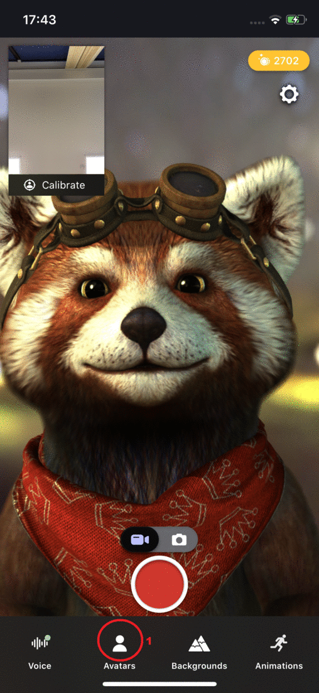

Animaze iPhone: What are Customization Slots and how to use them?

Customization Slots are slots in which you can save your avatar after you’ve customized it. You can purchase more Customization Slots with coins. Your saved saved, customized avatar will appear under the “Customisations” section in the “Avatars” roster.
1. Customize your avatar.
2. Tap on  to save your customized avatar.
to save your customized avatar.
3. Tap on a slot to save your customized avatar.
4. Your customized avatar will load.
5. You can see your customized avatars in the “Avatars” roster.